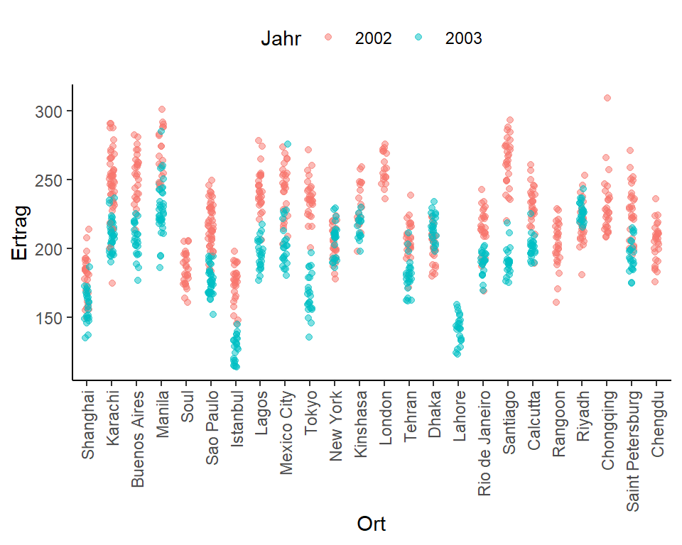
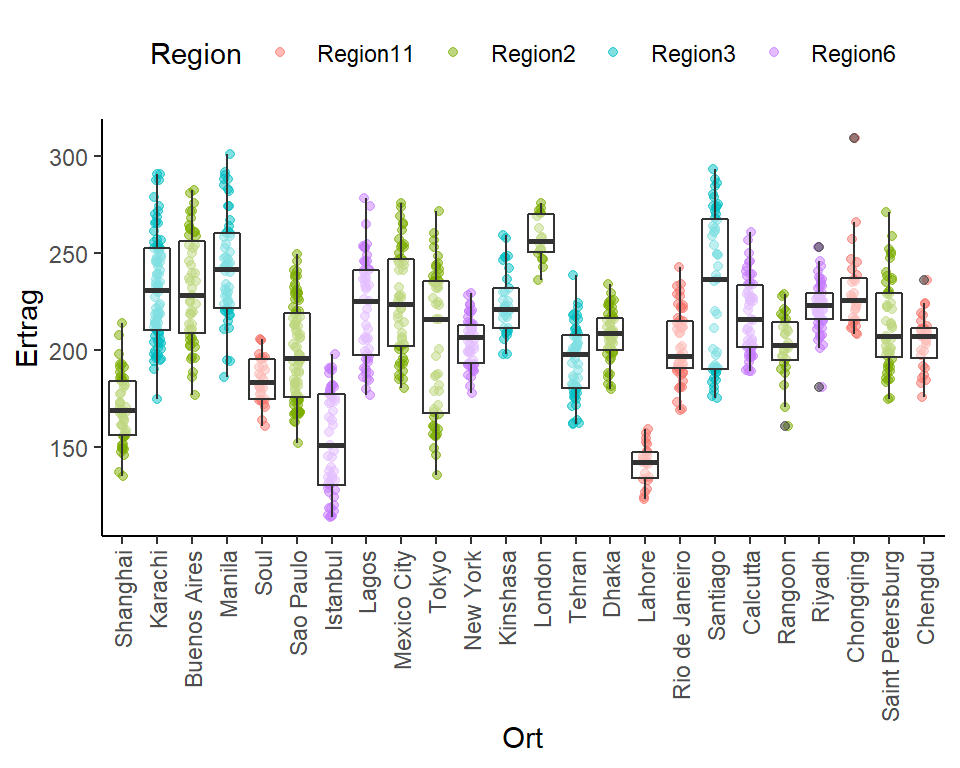

Zufällige Effekte mit Varianzstrukturen
In diesem Beispiel soll gezeigt werden wir mit dem glmmTMB package Varianzstrukturen für zufällige Effekte (also nicht für den Fehlerterm wie z.B. bei Messwiederholungen) genutzt werden können. Für mehr Infos
Die Idee für dieses Anwendungsbeispiel basiert auf der MSc Thesis “Statistical data analysis of cultivar trials with subdivided target regions: what does this mean for heritability?” von Muhammad Afzal
Datensatz
In den Jahren 2002 und 2003 wurden an mehreren Standorten Versuche mit Papaya-Sorten gemacht. Dabei wurde an jedem der insgesamt 24 Orte ein randomisierter Versuch mit Wiederholungen durchgeführt. Was genau für ein Versuchsdesign je Ort vorlag, ist aber für uns nicht mehr relavant, da wir in unserem Datensatz bereits nur noch die adjustierten Ertrags-Mittelwerte der insgesamt 51 Sorten je Ort vorliegen haben. Es handelt sich hier also um eine Versuchsserie, oder auch Multi-Environment-Trial (MET), wobei Environment/Umwelt jeweils für eine Jahr-Ort-Kombination steht.
METdat## Jahr Ort Sorte Region Ertrag
## 1: 2002 Shanghai Sorte1 Region2 185.8420
## 2: 2002 Shanghai Sorte3 Region2 185.5780
## 3: 2002 Shanghai Sorte5 Region2 172.9940
## 4: 2002 Shanghai Sorte6 Region2 181.9040
## 5: 2002 Shanghai Sorte7 Region2 182.3715
## ---
## 1120: 2003 Kinshasa Sorte40 Region3 205.4880
## 1121: 2003 Kinshasa Sorte41 Region3 229.9300
## 1122: 2003 Kinshasa Sorte47 Region3 208.8100
## 1123: 2003 Kinshasa Sorte48 Region3 220.1730
## 1124: 2003 Kinshasa Sorte50 Region3 207.5395str(METdat)## Classes 'data.table' and 'data.frame': 1124 obs. of 5 variables:
## $ Jahr : Factor w/ 2 levels "2002","..
## $ Ort : Factor w/ 24 levels "Shang"..
## $ Sorte : Factor w/ 51 levels "Sorte"..
## $ Region: Factor w/ 4 levels "Region"..
## $ Ertrag: num 186 186 173 182 182 ...
## - attr(*, ".internal.selfref")=<exter..Die Daten können auf viele Weisen deskriptiv ausgewertet werden. In folgendem Plot wird beispielsweise deutlich, dass das Jahr 2002 zu höheren Erträgen geführt hat als 2003. Außerdem eignen sich die Orte unterschiedlich gut für den Papayaanbau und nicht an jedem Ort wurde auch in beiden Jahren ein Versuch durchgeführt.
library(ggplot2)
ggplot(data=METdat, aes(y=Ertrag, x=Ort)) +
geom_jitter(aes(color=Jahr), width=0.1, alpha=0.5) +
theme_classic() +
theme(axis.text.x = element_text(angle=90, hjust=1, vjust=0.5),
legend.position = "top")
Außerdem sind die Versuchsstandorte verschiedenen Regionen zugeordnet. Die Regionen wurden ehemals so eingeteilt, dass in derselben Region immer ähnliche Wachstumsbedingungen herrschen. Es ist also zumindest zu erwarten, dass Papayas an Orten innerhalb derselben Region ähnlich gut wachsen.
# Anzahl Sortenmittelwerte je Ort-Jahr-Kombination
METdat %>% select(Ort, Jahr) %>% table## Jahr
## Ort 2002 2003
## Shanghai 28 23
## Karachi 46 38
## Buenos Aires 28 23
## Manila 18 38
## Soul 28 0
## Sao Paulo 46 38
## Istanbul 28 23
## Lagos 28 23
## Mexico City 28 23
## Tokyo 28 23
## New York 28 23
## Kinshasa 18 15
## London 18 0
## Tehran 28 23
## Dhaka 28 23
## Lahore 0 23
## Rio de Janeiro 28 23
## Santiago 28 23
## Calcutta 28 23
## Rangoon 28 0
## Riyadh 28 23
## Chongqing 28 0
## Saint Petersburg 28 23
## Chengdu 28 0# Zugehörigkeit der Orte zu Regionen
METdat %>% select(Ort, Region) %>% unique %>% arrange(Region)## Ort Region
## 1: Soul Region11
## 2: Rio de Janeiro Region11
## 3: Chongqing Region11
## 4: Chengdu Region11
## 5: Lahore Region11
## 6: Shanghai Region2
## 7: Buenos Aires Region2
## 8: Sao Paulo Region2
## 9: Mexico City Region2
## 10: Tokyo Region2
## 11: Dhaka Region2
## 12: Rangoon Region2
## 13: Saint Petersburg Region2
## 14: London Region2
## 15: Karachi Region3
## 16: Tehran Region3
## 17: Santiago Region3
## 18: Manila Region3
## 19: Kinshasa Region3
## 20: Istanbul Region6
## 21: Lagos Region6
## 22: New York Region6
## 23: Calcutta Region6
## 24: Riyadh Region6
## Ort Regionlibrary(ggplot2)
ggplot(data=METdat, aes(y=Ertrag, x=Ort)) +
geom_jitter(aes(color=Region), width=0.1, alpha=0.5) +
geom_boxplot(alpha=0.5) +
theme_classic() +
theme(axis.text.x = element_text(angle=90, hjust=1, vjust=0.5),
legend.position = "top")
Versuchsserien-Modell
Mit Daten wie diesen wird oft ein Modell aufgestellt, dass je einen Haupteffekt für Sorte, Ort und Jahr hat, sowie all deren Interaktionseffekte. Desweiteren werden diese Effekte wenn möglich auch als zufällige Effekte ins Modell aufgenommen. Selbst wenn alle dieser Effekte zufällig sind, gibt es jedoch weiterhin \(\mu\) im Modell, welches ein fester Effekt ist, sodass es sich so oder so um ein gemischtes lineares Modell handelt.
Mehr zu solchen Versuchsserien und deren Modellen:
Piepho, H. P., and J. Möhring. “Best linear unbiased prediction of cultivar effects for subdivided target regions.” Crop Science 45.3 (2005): 1151-1159.
Damesa, T. M., Möhring, J., Worku, M., & Piepho, H. P. (2017). One step at a time: stage-wise analysis of a series of experiments. Agronomy Journal, 109(3), 845-857.
Piepho, Hans‐Peter, et al. “A stage‐wise approach for the analysis of multi‐environment trials.” Biometrical Journal 54.6 (2012): 844-860.
Schmidt, P., et al. “More, larger, simpler: How comparable are on-farm and on-station trials for cultivar evaluation?.” Crop Science 58.4 (2018): 1508-1518.
Wir können solch ein Modell wie folgt aufstellen:
library(glmmTMB)## Warning: package 'glmmTMB' was built under R version 4.0.3mod1 <- glmmTMB(Ertrag ~ (1|Sorte) + (1|Ort) + (1|Jahr) +
(1|Sorte:Ort) + (1|Sorte:Jahr) + (1|Jahr:Ort),
data=METdat)AIC(mod1) # AIC-Wert## [1] 9116.258fixef(mod1) # Lösung feste Effekte (hier nur mu)##
## Conditional model:
## (Intercept)
## 206VarCorr(mod1) # Varianzkomponenten (bzw. deren Wurzel -> Std.Abw.)##
## Conditional model:
## Groups Name Std.Dev.
## Sorte (Intercept) 7.8281
## Ort (Intercept) 21.2585
## Jahr (Intercept) 16.4211
## Sorte:Ort (Intercept) 3.8692
## Sorte:Jahr (Intercept) 5.1317
## Jahr:Ort (Intercept) 16.4701
## Residual 11.2212Erweiterung um Regions-Effekte
Anstatt ein Modell wie das oben anzupassen, welches nur eine Varianzkomponente für alle Sorten an allen Orten zulässt, könnten wir die Informationen zu den Regionen mit ins Modell aufnehmen. Zunächst können wir einfach Region als (festen) Effekt mit ins Modell nehmen und zwar so, dass jeder Ort-Effekt nun immer geschachtel im Region Effekt vorkommt (mehr dazu hier):
mod2 <- glmmTMB(Ertrag ~ Region + (1|Sorte) + (1|Ort:Region) + (1|Jahr) +
(1|Jahr:Ort:Region) + (1|Sorte:Ort:Region) +
(1|Sorte:Jahr),
data=METdat)
AIC(mod2) # AIC-Wert## [1] 9116.053fixef(mod2) # Lösung feste Effekte##
## Conditional model:
## (Intercept) RegionRegion2 RegionRegion3 RegionRegion6
## 186.73 20.11 37.18 15.73VarCorr(mod2) # Varianzkomponenten (bzw. deren Wurzel -> Std.Abw.)##
## Conditional model:
## Groups Name Std.Dev.
## Sorte (Intercept) 7.8271
## Ort:Region (Intercept) 17.8058
## Jahr (Intercept) 16.7759
## Jahr:Ort:Region (Intercept) 16.2713
## Sorte:Ort:Region (Intercept) 3.8709
## Sorte:Jahr (Intercept) 5.1320
## Residual 11.2206VarCorr(mod2)$cond$Sorte # Details zur Varianzkomponente für Sorte## (Intercept)
## (Intercept) 61.26284
## attr(,"stddev")
## (Intercept)
## 7.827058
## attr(,"correlation")
## (Intercept)
## (Intercept) 1
## attr(,"blockCode")
## us
## 1Soweit so gut - jetzt kommt der interessante Teil dieses Beispiels. Zusätzlich können wir anstelle von einer Varianzkomponente für den zufälligen Sorten-Haupteffekt einen pro Region anpassen. Das ist aus biologischer Sicht naheliegend, weil wir so erlauben, dass die Sorten je Region unterschiedlich variieren - im Sinne von streuen. Dies lässt sich mit folgender Syntax umsetzen:
mod3 <- glmmTMB(Ertrag ~ Region + diag(0+Region|Sorte) + (1|Ort:Region) + (1|Jahr) +
(1|Jahr:Ort:Region) + (1|Sorte:Ort:Region) +
(1|Sorte:Jahr),
data=METdat)
AIC(mod3) # AIC-Wert## [1] 9121.651fixef(mod3) # Lösung feste Effekte##
## Conditional model:
## (Intercept) RegionRegion2 RegionRegion3 RegionRegion6
## 187.18 20.38 37.30 15.77VarCorr(mod3) # Varianzkomponenten (bzw. deren Wurzel -> Std.Abw.)##
## Conditional model:
## Groups Name Std.Dev. Corr
## Sorte RegionRegion11 2.2860e+00
## RegionRegion2 3.5148e+00 0.000
## RegionRegion3 4.7569e+00 0.000 0.000
## RegionRegion6 3.6828e-05 0.000 0.000 0.000
## Ort:Region (Intercept) 1.7846e+01
## Jahr (Intercept) 1.6007e+01
## Jahr:Ort:Region (Intercept) 1.6276e+01
## Sorte:Ort:Region (Intercept) 2.9010e+00
## Sorte:Jahr (Intercept) 8.5520e+00
## Residual 1.1213e+01VarCorr(mod3)$cond$Sorte # Details zur Varianzkomponente für Sorte## RegionRegion11 RegionRegion2 RegionRegion3 RegionRegion6
## RegionRegion11 5.225864 0.00000 0.00000 0.000000e+00
## RegionRegion2 0.000000 12.35414 0.00000 0.000000e+00
## RegionRegion3 0.000000 0.00000 22.62824 0.000000e+00
## RegionRegion6 0.000000 0.00000 0.00000 1.356324e-09
## attr(,"stddev")
## RegionRegion11 RegionRegion2 RegionRegion3 RegionRegion6
## 2.286015e+00 3.514846e+00 4.756915e+00 3.682831e-05
## attr(,"correlation")
## RegionRegion11 RegionRegion2 RegionRegion3 RegionRegion6
## RegionRegion11 1 0 0 0
## RegionRegion2 0 1 0 0
## RegionRegion3 0 0 1 0
## RegionRegion6 0 0 0 1
## attr(,"blockCode")
## diag
## 0Wir können aber noch weiter gehen und nun auch noch Korrelation zwischen den Regionen erlauben. Demnach passen wir einen zufälligen Sortenhaupteffekt mit regionsspezifischen Varianzkomponenten und sogar Kovarianz zwischen den Regionen an. Allerdings wählen wir vorerst die cs (Compound Symmetry) Varianzstruktur, welche von ein und derselben Korrelation zwischen allen Regionen ausgeht:
mod4 <- glmmTMB(Ertrag ~ Region + cs(0+Region|Sorte) + (1|Ort:Region) + (1|Jahr) +
(1|Jahr:Ort:Region) + (1|Sorte:Ort:Region) +
(1|Sorte:Jahr),
data=METdat)
AIC(mod4) # AIC-Wert## [1] 9116.188fixef(mod4) # Lösung feste Effekte##
## Conditional model:
## (Intercept) RegionRegion2 RegionRegion3 RegionRegion6
## 186.65 20.29 37.25 15.79VarCorr(mod4) # Varianzkomponenten (bzw. deren Wurzel -> Std.Abw.)##
## Conditional model:
## Groups Name Std.Dev. Corr
## Sorte RegionRegion11 7.4340 0.896 (cs)
## Ort:Region (Intercept) 17.8314
## Jahr (Intercept) 16.7894
## Jahr:Ort:Region (Intercept) 16.3032
## Sorte:Ort:Region (Intercept) 2.9776
## Sorte:Jahr (Intercept) 5.1023
## Residual 11.2447VarCorr(mod4)$cond$Sorte # Details zur Varianzkomponente für Sorte## RegionRegion11 RegionRegion2 RegionRegion3 RegionRegion6
## RegionRegion11 55.26503 50.71199 64.80986 45.12340
## RegionRegion2 50.71199 57.90495 66.33974 46.18856
## RegionRegion3 64.80986 66.33974 94.57506 59.02893
## RegionRegion6 45.12340 46.18856 59.02893 45.84563
## attr(,"stddev")
## RegionRegion11 RegionRegion2 RegionRegion3 RegionRegion6
## 7.434046 7.609530 9.724971 6.770940
## attr(,"correlation")
## RegionRegion11 RegionRegion2 RegionRegion3 RegionRegion6
## RegionRegion11 1.0000000 0.8964531 0.8964531 0.8964531
## RegionRegion2 0.8964531 1.0000000 0.8964531 0.8964531
## RegionRegion3 0.8964531 0.8964531 1.0000000 0.8964531
## RegionRegion6 0.8964531 0.8964531 0.8964531 1.0000000
## attr(,"blockCode")
## cs
## 2Schließlich probieren wir zumindest noch die flexibelste Varianzstruktur us() (Unstructured) - heterogene Varianzen je Region und heterogene Kovarianzen zwischen Regionen:
mod5 <- glmmTMB(Ertrag ~ Region + us(0+Region|Sorte) + (1|Ort:Region) + (1|Jahr) +
(1|Jahr:Ort:Region) + (1|Sorte:Ort:Region) +
(1|Sorte:Jahr),
data=METdat)## Warning in fitTMB(TMBStruc): Model convergence problem; non-positive-definite
## Hessian matrix. See vignette('troubleshooting')AIC(mod5) # AIC-Wert## [1] NAfixef(mod5) # Lösung feste Effekte##
## Conditional model:
## (Intercept) RegionRegion2 RegionRegion3 RegionRegion6
## 187.26 20.22 37.16 15.52VarCorr(mod5) # Varianzkomponenten (bzw. deren Wurzel -> Std.Abw.)##
## Conditional model:
## Groups Name Std.Dev. Corr
## Sorte RegionRegion11 2.3078e-10
## RegionRegion2 4.5173e+00 -0.999
## RegionRegion3 7.1367e+00 -0.587 0.588
## RegionRegion6 3.1882e+00 -0.567 0.568 1.000
## Ort:Region (Intercept) 1.7860e+01
## Jahr (Intercept) 1.6086e+01
## Jahr:Ort:Region (Intercept) 1.6270e+01
## Sorte:Ort:Region (Intercept) 2.7470e+00
## Sorte:Jahr (Intercept) 7.9203e+00
## Residual 1.1219e+01VarCorr(mod5)$cond$Sorte # Details zur Varianzkomponente für Sorte## RegionRegion11 RegionRegion2 RegionRegion3 RegionRegion6
## RegionRegion11 5.325755e-20 -1.041089e-09 -9.673429e-10 -4.172610e-10
## RegionRegion2 -1.041089e-09 2.040614e+01 1.897220e+01 8.183874e+00
## RegionRegion3 -9.673429e-10 1.897220e+01 5.093267e+01 2.274389e+01
## RegionRegion6 -4.172610e-10 8.183874e+00 2.274389e+01 1.016468e+01
## attr(,"stddev")
## RegionRegion11 RegionRegion2 RegionRegion3 RegionRegion6
## 2.307760e-10 4.517315e+00 7.136713e+00 3.188210e+00
## attr(,"correlation")
## RegionRegion11 RegionRegion2 RegionRegion3 RegionRegion6
## RegionRegion11 1.0000000 -0.9986584 -0.5873428 -0.5671140
## RegionRegion2 -0.9986584 1.0000000 0.5884899 0.5682398
## RegionRegion3 -0.5873428 0.5884899 1.0000000 0.9995847
## RegionRegion6 -0.5671140 0.5682398 0.9995847 1.0000000
## attr(,"blockCode")
## us
## 1Mehr zu Varianzstrukturen gibt’s hier.
Bei Fragen kannst du mir gerne schreiben!
schmidtpaul@hotmail.de